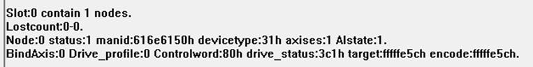

|
类型 |
Rtex辅助指令 |
|
描述 |
调试时使用，可以显示每个NODE的重要状态。 总线启动后才能显示设备状态。 |
|
语法 |
?*RTEX |
|
适用控制器 |
带RTEX接口 |
|
例子 |
?*RTEX 打印结果：  Slot 0 contain 1 nodes：0槽位口共连接了1个设备 Lostcount 0-0：丢包数 Node：设备连接NODE编号 Status：设备连接状态，参考NODE_STATUS Mainid：厂商ID Productid：设备ID Axises：设备总轴数 AL Status：设备OP状态 Node_profile：设备Profile设置 Bindaxis：映射到控制器轴号 Drive_profile：设备收发PDO设置 Controlword：控制字 Drive_status：设备当前状态，参考DRIVE_STATUS Drive_mode：设备控制模式 Target：电机位置 Encoder：编码器位置 |
|
相关指令 |